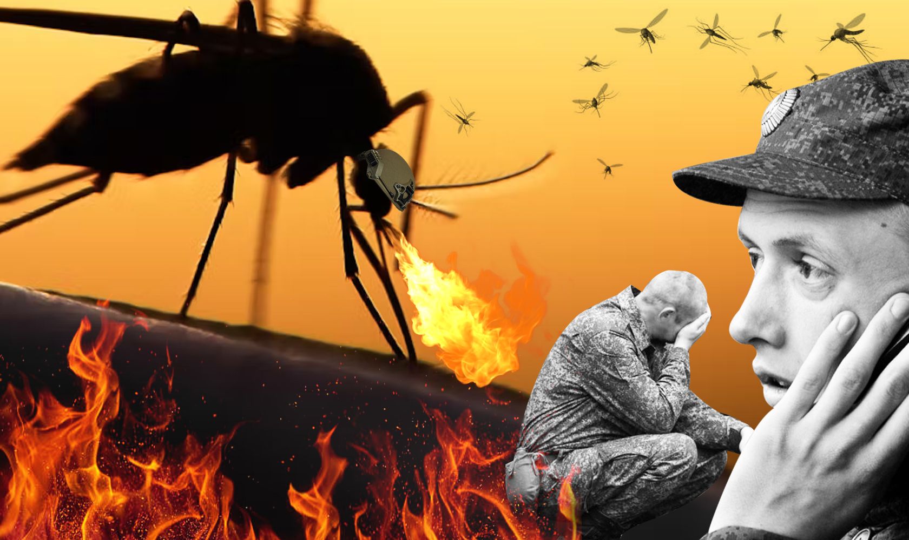

У ніч на 6 червня російські окупаційні війська підірвали греблю Каховської ГЕС, що створило загрозу підтоплення для десятків населених пунктів.
За даними української розвідки, окупанти вчинили цей воєнний злочин близько 02:30 ночі.
Каховська ГЕС розташована на відстані близько 5 км від міста Нова Каховка (Херсонська область). Її будували другою після Дніпровської гідроелектростанції (у Дніпровському каскаді ГЕС). Каховське водосховище вміщувало близько 18 млн кубометрів води. Після підриву дамби тонни води ринули вниз за течією.
Про жахливі "подарунки", які прибувають до узбережжя Чорного моря у соціальних мережах повідомляють місцеві жителі. Зокрема, про уламки меблів, величезні частини будинків - дахи, двері тощо повідомляє населення передмістя Одеси та Южного.
"Цей бруд рухається у бік Одеси, після чого дійде до Румунії, Болгарії та Туреччини", - зазначає еколог.
"Продовжує масово заходити вода з Херсона. Там тупо все… від дахів будинків, російських мін, до трупів тварин…", - розповідають люди.
"Також із затопленнями у воду може потрапити будь-що. Дехто вже бачив, як морем вздовж Южного плавають речі людей, які вимило із квартир та домогосподарств на Херсонщині", - констатує Літошко.
United24 збирає кошти для рятувальних служб
Ініціатива United24 запустила збір коштів для служб, які займаються евакуацією та подоланням наслідків підриву Каховської ГЕС. Кошти підуть на човни і плоти, мотопомпи, ліхтарі, гідрокостюми й рятувальну техніку. Задонатити можна за посиланням.
Фонд Musicians Defend Ukraine збирає на моторні човни
БФ Musicians Defend Ukraine підтримує українських музикантів, які перебувають на фронті. Цього разу фонд отримав запит на моторні човни. Підтримати збір можна тут.
Music Saves UA збирає кошти на евакуацію та гуманітарну допомогу
Ініціативу Music Saves UA заснувала Всеукраїнська асоціація музичних подій для надання негайної гуманітарної допомоги. Після деокупації Херсону за її підтримки в місті працювали два пункти незламності. Тепер ініціатива збирає гроші на евакуацію та гуманітарну допомогу.
Кожного разу, коли рф пробиває дно черговим фейком, здається, що вже далі нікуди. Проте, як виявляється там таке бездонне дно, що чорна діра буде здаватися мілиною. Після фейку, з якого потішився весь адекватний світ, про «брудну бомбу», яку Україна ось-ось підготує, ерефія ротом свого постпреда у Радбезі ООН товариша небензі, заявила, що Україна може застосувати біологічну зброю у вигляді американських бойових комарів і кажанів. Російське керівництво вже на офіційному рівні знову повернулося до заяв про біологічну зброю в Україні та ймовірність її застосування. 19 червня начальник військ радіаційного, хімічного та біологічного захисту (РХБЗ), генерал-лейтенант Ігор Кирилов, на брифінгу заявив про збільшення кількості американських військових біолабораторій. В них можуть створити штучні осередки особливо небезпечних інфекційних хвороб.
